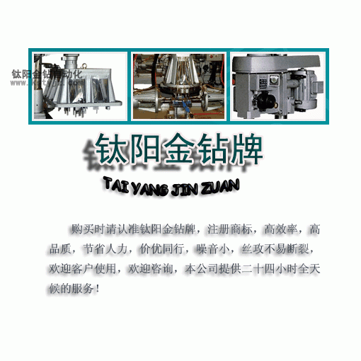

攻牙機行業針對國內機床行業面對市場改革的一
文章出處：未知責任編輯：kstyjz人氣：發表時間：2014-01-07 14:02

十八屆三中全會以來，國內已經確定了未來中國走科技發展路線的道路，不能徘徊在半加工產業模式，中國未來發展要面向提高產業升級、加強科技創新能力的方向轉化。
近些年從機遇講，作為機械工業的工作母機，國內市場迅速擴大，中央與地方給予了一系列優惠政策與資金支持，設立了“數控”專項。又得到上至中央，下到地方的黨政主要領導的關注，是歷史上從來沒有過發展的好環境，見到的成績甚感欣慰，對存在的問題也十分憂慮。所以生出改變現狀的思考。主要有這幾點，要熟悉“衣食父母”用戶的現實需求與潛在需求，並與這些用戶的要求同步發展。要把可靠性、精度一致性、精度保持性放在首位。
1.深入瞭解“衣食父母”用戶的現實需求與潛在需求，要把可靠性、精度一致性、精度保持性放在首位。
作為在機床行業工作幾十年的老機床工作者，我提出改變目前局面，就要熟悉“衣食父母”用戶的現實需求與潛在需求，並與這些用戶的要求同步發展。不能僅僅局限在機床工具產品幾個性能指標上，不追求不切實際的“高指標”。
機床工具企業應長期跟蹤及瞭解自己產品，特別是產品在用戶使用實踐情況，要很熟悉並懂得用戶使用工藝，包括機床、刀具、量具及切削原理。一來幫助用戶排除使用過程中的障礙，二來通過多次PDCA方法反饋，對機床工具進行改進、提高、完善，使機床工具產品在用戶心中紮下根，成為忠誠的用戶。機床的可靠性，加工精度的一致性，精度保持性等只有通過這樣的艱苦努力才能得到解決。國外有名的機床工具行業也是經歷過這段歷程的，誰違背這個規律，誰就自食苦果。標準是提高機床可靠性、精度一致性及精度保持性等質量的“牛鼻子”，必須與國際接軌，而且要強制執行。到目前為止，機床的可靠性標準都沒有，不進行考核，這不是很奇怪嗎？
2.機床產品必須得到用戶的首肯。
各種機床展覽會、新產品，包括政府各“專項”資助的高端數控機床，琳琅滿目。但不少僅是樣機、樣品而己，要變為商品，還有很長的一段路要走。到用戶使用實踐中得到驗證，並被用戶首肯就更加困難了。因此，新產品產業化是一個坎，這個坎比研發新產品更困難，有時甚至在產業化中就被淘汰了，有的還需要脫胎換骨，推倒重新設計。但個別機床工具企業出了一個新產品，特別是“專項”新產品，就“報喜”，報紙上有名，電視台有聲，自我感覺良好，他們不知道沒有用戶使用實踐的考驗，沒有用戶的首肯，不繼續不斷改進、完善是沒有用的。這種浮躁、急功近利的思想最後害了國家，害了用戶，最終害了自己，永遠不會鳳凰涅的。
3.建立早發現早解決機制非常重要。
前幾年豐田汽車公司出現了嚴重的“召回門”事件，豐田公司領導立刻決斷在質量管理系統成立EDER(早發現早解決在用戶出現的問題)部門。作為精益生產、準時化管理創造者的豐田公司尚且這樣重視用戶使用過程中的問題，何況我們機床工具企業呢？我們很多機床企業生產的品種太多、太雜，沒有分析自己在競爭中的優勢與劣勢，在市場中找準自己的定位，而且忽視細分用戶市場的需求特點，缺乏進行個性化服務和有針對性的創新。我在用戶中調查研究時經常聽到用戶對售後服務的不滿意的聲音，有問題時製造廠遲遲不能解決。這樣怎麼能獲得“衣食父母”的信任呢？
綜合以上思考，只有為“衣食父母”解決問題，讓他們在使用國產機床時也能產生經濟效益與社會效益，才會有機床工業的出路，才會有機床企業的效益，才能持續地發展下去，並且經營得更好，這就是製造商與用戶的“雙贏政策”。
我的這些思考與機床工具行業領導進行了溝通，得到的回答是：目前機床工具行業考慮的是吃飯問題，你說的意見要由總理來考慮。這個領導把目前行業存在的問題統統推給總理
十八屆三中全會以來，國內已經確定了未來中國走科技發展路線的道路，不能徘徊在半加工產業模式，中國未來發展要面向提高產業升級、加強科技創新能力的方向轉化。
近些年從機遇講，作為機械工業的工作母機，國內市場迅速擴大，中央與地方給予了一系列優惠政策與資金支持，設立了“數控”專項。又得到上至中央，下到地方的黨政主要領導的關注，是歷史上從來沒有過發展的好環境，見到的成績甚感欣慰，對存在的問題也十分憂慮。所以生出改變現狀的思考。主要有這幾點，要熟悉“衣食父母”用戶的現實需求與潛在需求，並與這些用戶的要求同步發展。要把可靠性、精度一致性、精度保持性放在首位。
1.深入瞭解“衣食父母”用戶的現實需求與潛在需求，要把可靠性、精度一致性、精度保持性放在首位。
作為在機床行業工作幾十年的老機床工作者，我提出改變目前局面，就要熟悉“衣食父母”用戶的現實需求與潛在需求，並與這些用戶的要求同步發展。不能僅僅局限在機床工具產品幾個性能指標上，不追求不切實際的“高指標”。
機床工具企業應長期跟蹤及瞭解自己產品，特別是產品在用戶使用實踐情況，要很熟悉並懂得用戶使用工藝，包括機床、刀具、量具及切削原理。一來幫助用戶排除使用過程中的障礙，二來通過多次PDCA方法反饋，對機床工具進行改進、提高、完善，使機床工具產品在用戶心中紮下根，成為忠誠的用戶。機床的可靠性，加工精度的一致性，精度保持性等只有通過這樣的艱苦努力才能得到解決。國外有名的機床工具行業也是經歷過這段歷程的，誰違背這個規律，誰就自食苦果。標準是提高機床可靠性、精度一致性及精度保持性等質量的“牛鼻子”，必須與國際接軌，而且要強制執行。到目前為止，機床的可靠性標準都沒有，不進行考核，這不是很奇怪嗎？
2.機床產品必須得到用戶的首肯。
各種機床展覽會、新產品，包括政府各“專項”資助的高端數控機床，琳琅滿目。但不少僅是樣機、樣品而己，要變為商品，還有很長的一段路要走。到用戶使用實踐中得到驗證，並被用戶首肯就更加困難了。因此，新產品產業化是一個坎，這個坎比研發新產品更困難，有時甚至在產業化中就被淘汰了，有的還需要脫胎換骨，推倒重新設計。但個別機床工具企業出了一個新產品，特別是“專項”新產品，就“報喜”，報紙上有名，電視台有聲，自我感覺良好，他們不知道沒有用戶使用實踐的考驗，沒有用戶的首肯，不繼續不斷改進、完善是沒有用的。這種浮躁、急功近利的思想最後害了國家，害了用戶，最終害了自己，永遠不會鳳凰涅的。
3.建立早發現早解決機制非常重要。
前幾年豐田汽車公司出現了嚴重的“召回門”事件，豐田公司領導立刻決斷在質量管理系統成立EDER(早發現早解決在用戶出現的問題)部門。作為精益生產、準時化管理創造者的豐田公司尚且這樣重視用戶使用過程中的問題，何況我們機床工具企業呢？我們很多機床企業生產的品種太多、太雜，沒有分析自己在競爭中的優勢與劣勢，在市場中找準自己的定位，而且忽視細分用戶市場的需求特點，缺乏進行個性化服務和有針對性的創新。我在用戶中調查研究時經常聽到用戶對售後服務的不滿意的聲音，有問題時製造廠遲遲不能解決。這樣怎麼能獲得“衣食父母”的信任呢？
綜合以上思考，只有為“衣食父母”解決問題，讓他們在使用國產機床時也能產生經濟效益與社會效益，才會有機床工業的出路，才會有機床企業的效益，才能持續地發展下去，並且經營得更好，這就是製造商與用戶的“雙贏政策”。
我的這些思考與機床工具行業領導進行了溝通，得到的回答是：目前機床工具行業考慮的是吃飯問題，你說的意見要由總理來考慮。這個領導把目前行業存在的問題統統推給總理
上一篇：攻牙機結構概念基本原理 | 下一篇：鑽孔攻牙機加工過程中的誤差產生與關鍵值
相關資訊
- 攻牙機能夠使用的方法是什麼呢？'>攻牙機能夠使用的方法是什麼呢？
- 自動攻牙機沖床和沖孔機的對比'>自動攻牙機沖床和沖孔機的對比
- 解析自動攻牙機機床的發展方向'>解析自動攻牙機機床的發展方向
- 攻牙機和台鑽有什麼區別？'>攻牙機和台鑽有什麼區別？
- 全自動攻牙機如何分析螺紋加工的質量問'>全自動攻牙機如何分析螺紋加工的質量問
- 全自動攻牙機的十大功能特點'>全自動攻牙機的十大功能特點
- 手動攻牙機的性能特點'>手動攻牙機的性能特點
- 全自動玻璃攻牙機有那些特點？'>全自動玻璃攻牙機有那些特點？
- 自動鑽孔機專家講內燃式鑽孔機和電動式'>自動鑽孔機專家講內燃式鑽孔機和電動式
- 江蘇加工中心蘇州攻牙機加工中心廠家


推薦文章
- 影響電動攻牙機性能的
- 何以自動攻牙機可以做
- 攻螺紋前鑽底孔直徑和
- 鑽孔機如何選擇,台式自
- 攻牙油 百 科
- 自動鑽床自動攻牙機離
- SPS-全自動鑽孔倒角攻牙
- 攻牙機原理,多功能機床
- 動力頭基本構造及相關
- 自動攻牙機深孔。小孔